五月的學期即將結束，準備收拾行李回台灣時，除了結清各項服務，通常還會面臨一個現實的煩惱：美國銀行帳戶裡剩下的美金該怎麼處理？
對於短期赴美的學生來說，戶頭裡通常可能只剩下幾百塊美金（例如 500 USD 以下的零頭）。這筆錢說多不多、說少不少，如果選擇用傳統的國際電匯把錢打回台灣，單筆動輒 30 到 50 美金的手續費，直接吃掉了餘額的一大截；如果全部領成現鈔帶在身上，不僅麻煩，回台灣後還得再跑一趟銀行換匯，同樣會面臨匯差與手續費的剝削。
這篇筆記記錄了我實際操作過的路徑。透過 World App、Bitget 與 MAX 等平台的串聯，你可以把這筆美金餘額，以極低的手續費損耗轉回台灣的銀行帳戶。這套流程不需要美國的 SSN 或 ITIN，單純是利用區塊鏈網路低手續費的特性來進行資金轉移。
流程總覽與事前準備
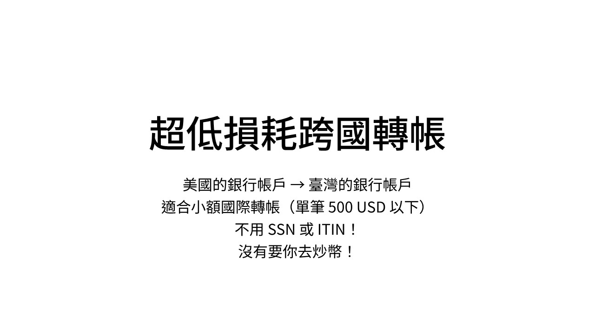
整個資金流動的過程會經過三個主要平台作為中繼站：美國帳戶 ➡️ (ACH) ➡️ World App ➡️ (WLD) ➡️ Bitget 國際交易所 ➡️ (USDT) ➡️ MAX 台灣交易所 ➡️ (TWD) ➡️ 臺灣帳戶。
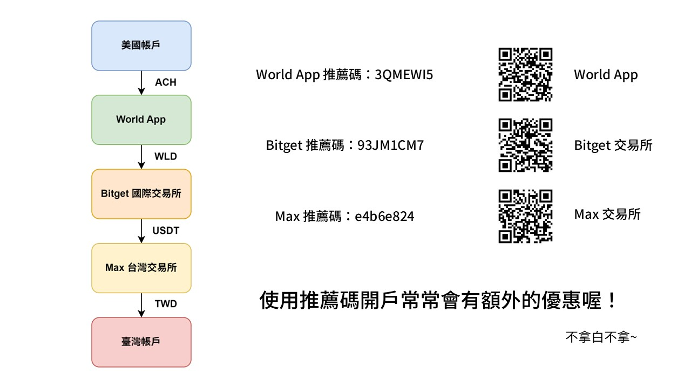
在開始前，請先下載並註冊這三個 App，並務必完成各平台的 KYC 身分驗證（通常需上傳證件與臉部辨識）。建議使用推薦碼註冊，以獲取手續費折抵或額外獎勵：
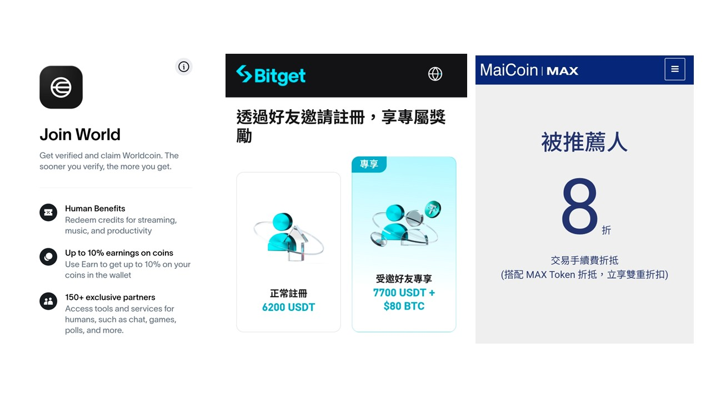
步驟一：從美國銀行帳戶轉帳至 World App
首先，我們需要將美金存入 World App 提供的虛擬帳戶中。
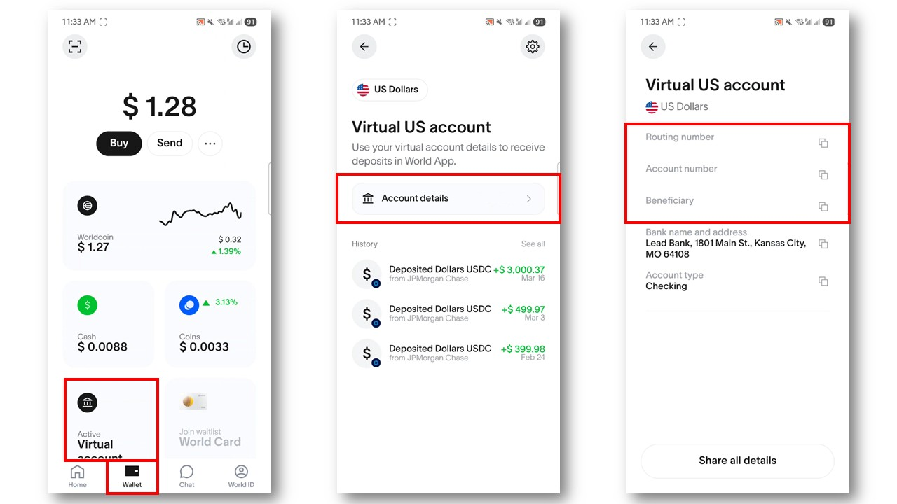
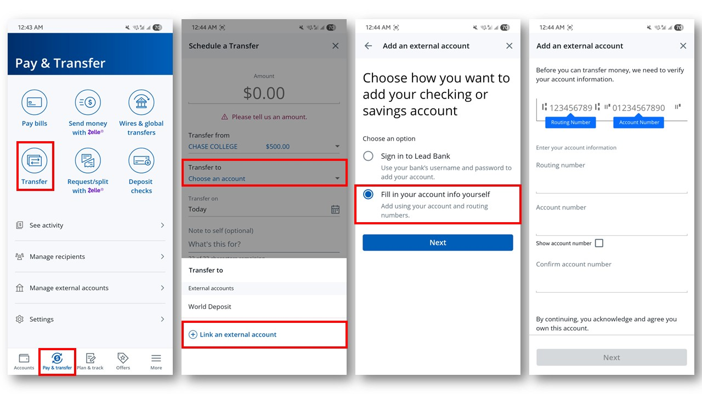
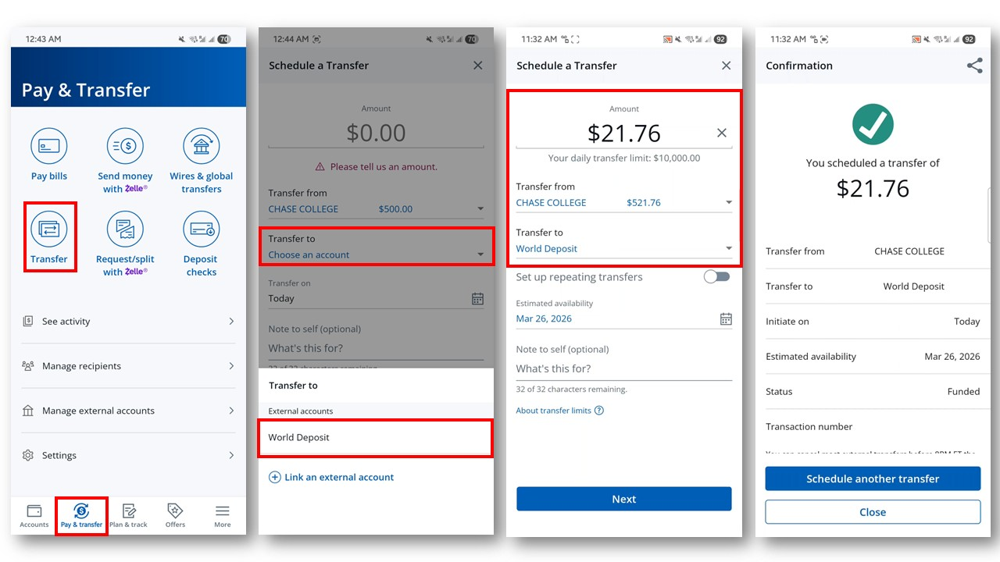
步驟二：在 World App 將 USDC 換成 WLD
美金入金後，我們需要將它轉換成 WLD (Worldcoin) 以便利用其網路轉出。
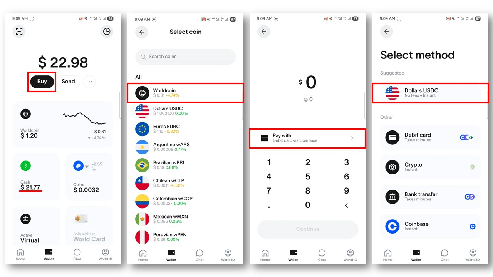
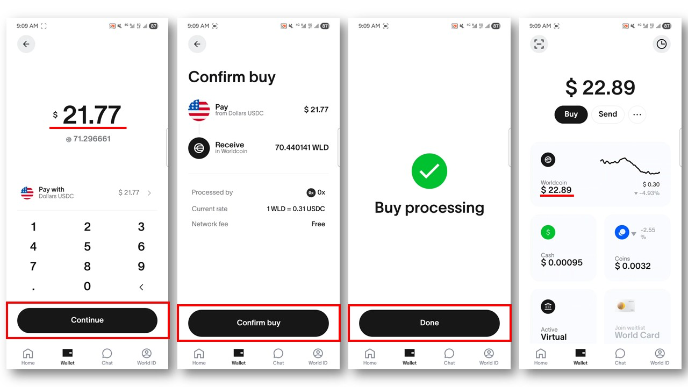
步驟三：將 WLD 提領至 Bitget 交易所
接下來，要把 WLD 轉移到 Bitget。這一步請務必確認網路選擇正確。
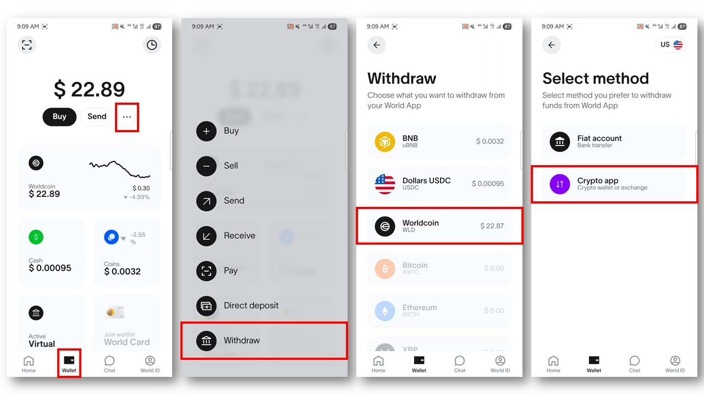
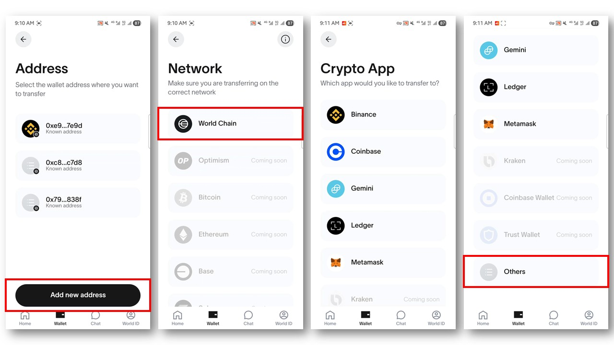
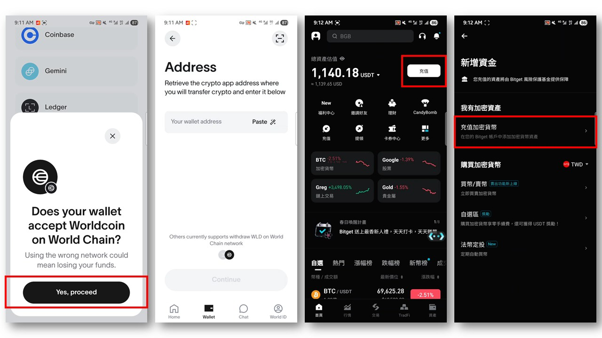
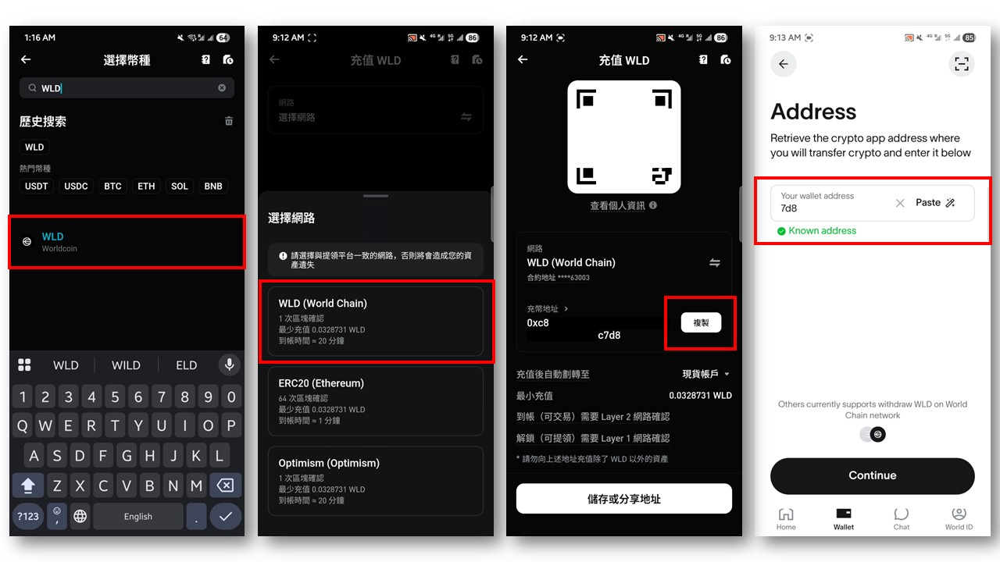
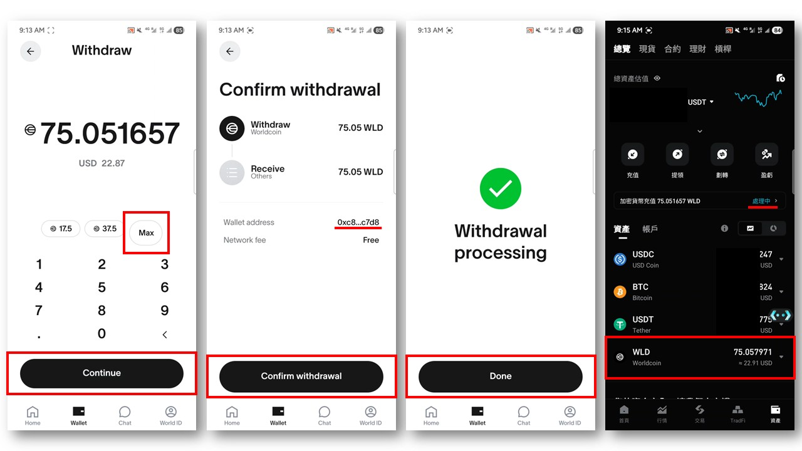
步驟四：在 Bitget 將 WLD 賣出成 USDT，並提領到 Max 交易所
資金到達 Bitget 後，我們要將它交易成與美元掛鉤的穩定幣 USDT。
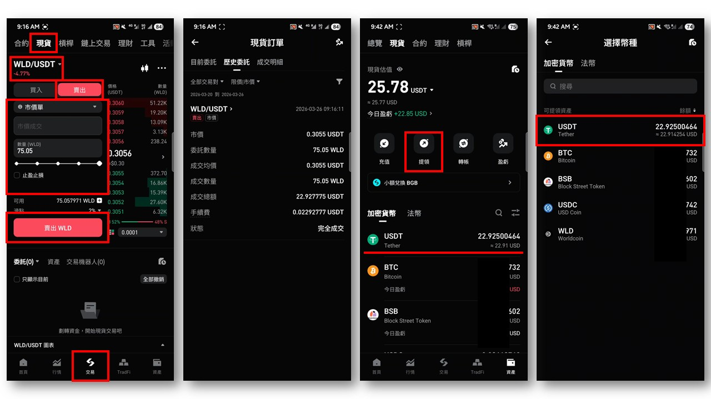
現在要把資金轉回台灣的交易所。這一步的網路選擇攸關手續費多寡。
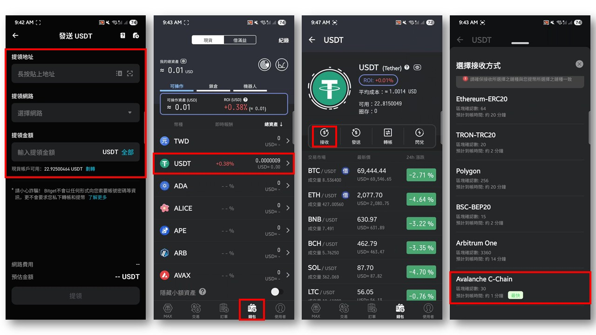
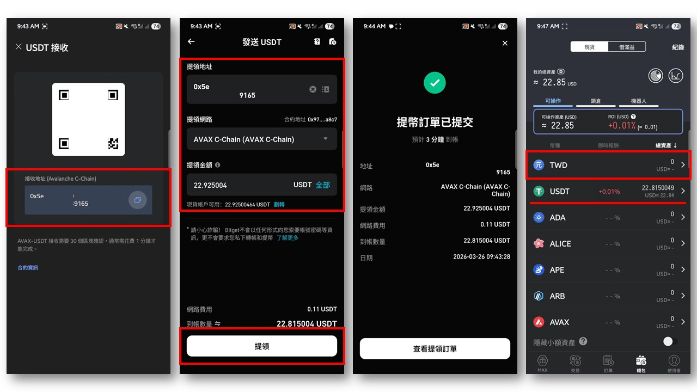
步驟五：在 MAX 將 USDT 換成台幣並提領至銀行
最後一步，將 USDT 變現並存入你的台灣銀行戶頭。
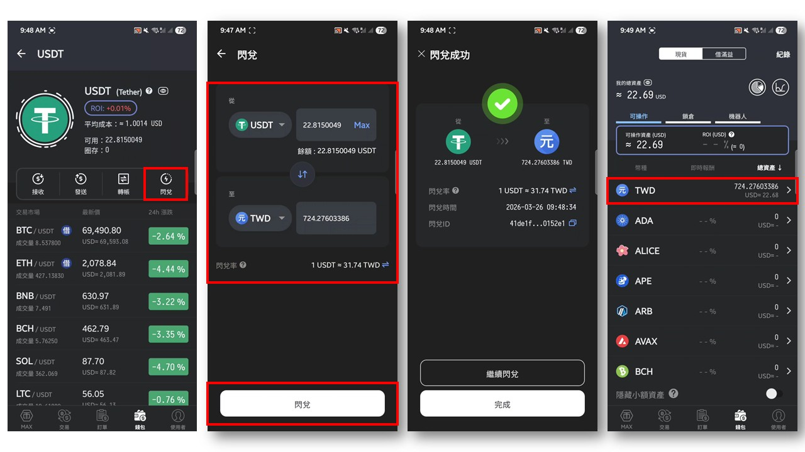
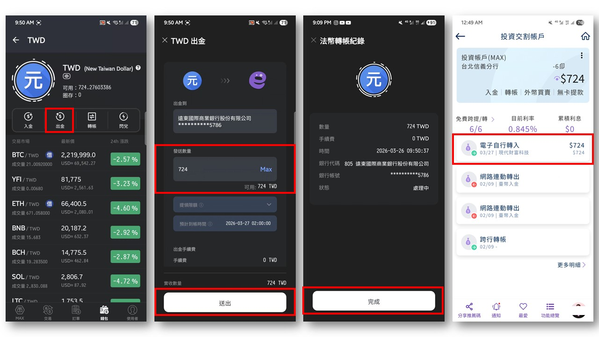
送出出金申請後，等待一至兩個工作天的系統處理與銀行作業時間，台幣就會順利入帳了。
結語：為什麼不直接用國際銀行電匯？
看完上述步驟，你可能會覺得繞了一大圈，為什麼不直接透過美國銀行進行國際電匯（Wire Transfer）就好？
關鍵在於資金的損耗比例。傳統的國際電匯通常會經過發報行、中轉行與解款行，層層扣款下來，單筆的固定手續費往往落在 30 到 50 美金之間。如果你單次轉帳的金額龐大，這筆固定手續費或許微不足道；但對於只剩幾百塊美金要處理的留學生來說，手續費佔比極高，十分不划算。
相對而言，這套利用加密貨幣平台中繼的轉帳法，雖然前期需要花時間註冊並完成身分審核，操作步驟也較為繁雜，但它確實能將轉帳成本壓到最低。這並不是要完全取代傳統銀行，而是提供一個務實的選擇，解決小額跨國資金轉移的痛點。